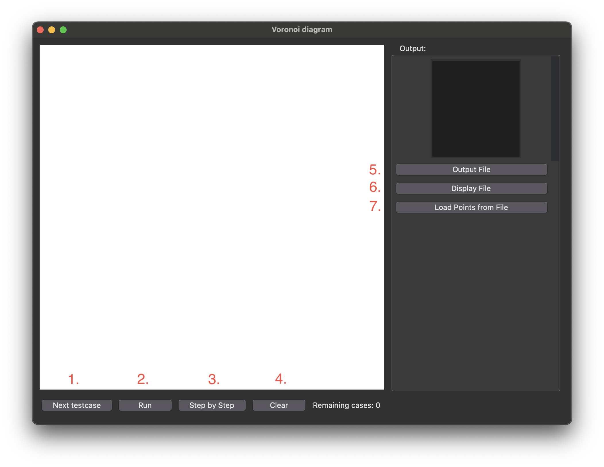
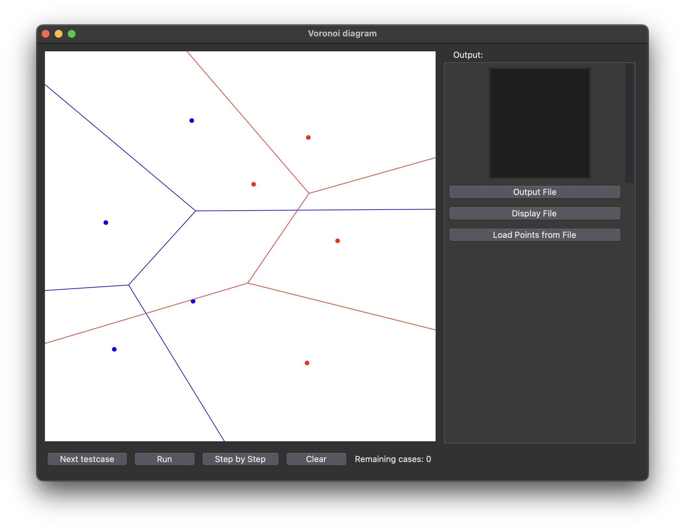
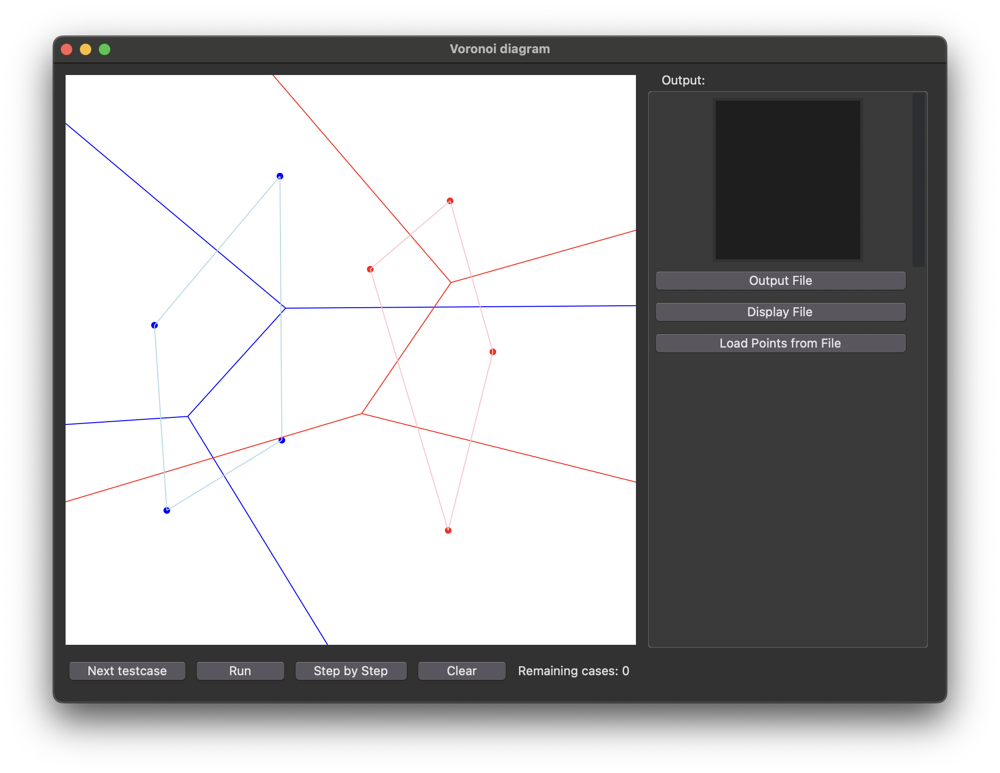
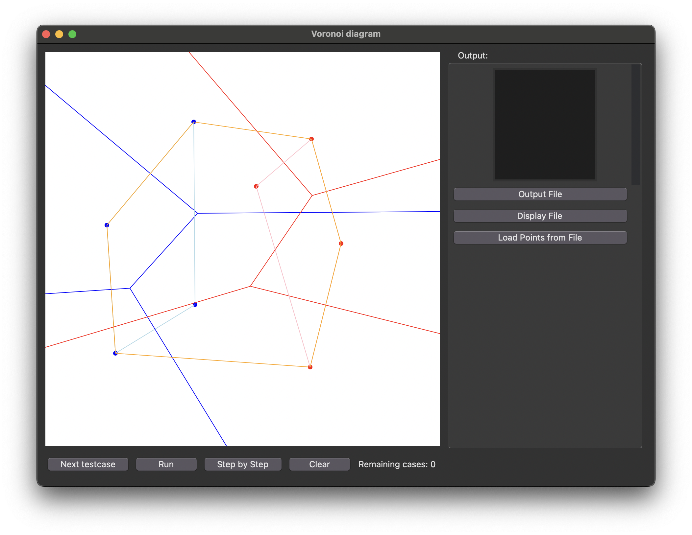
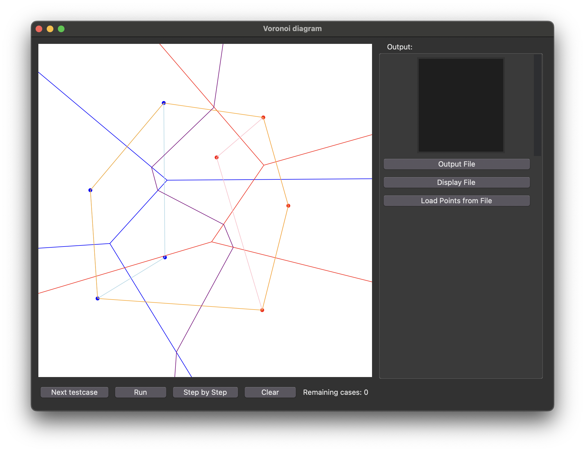
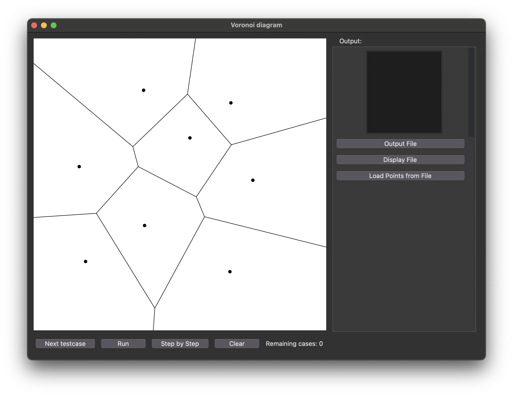
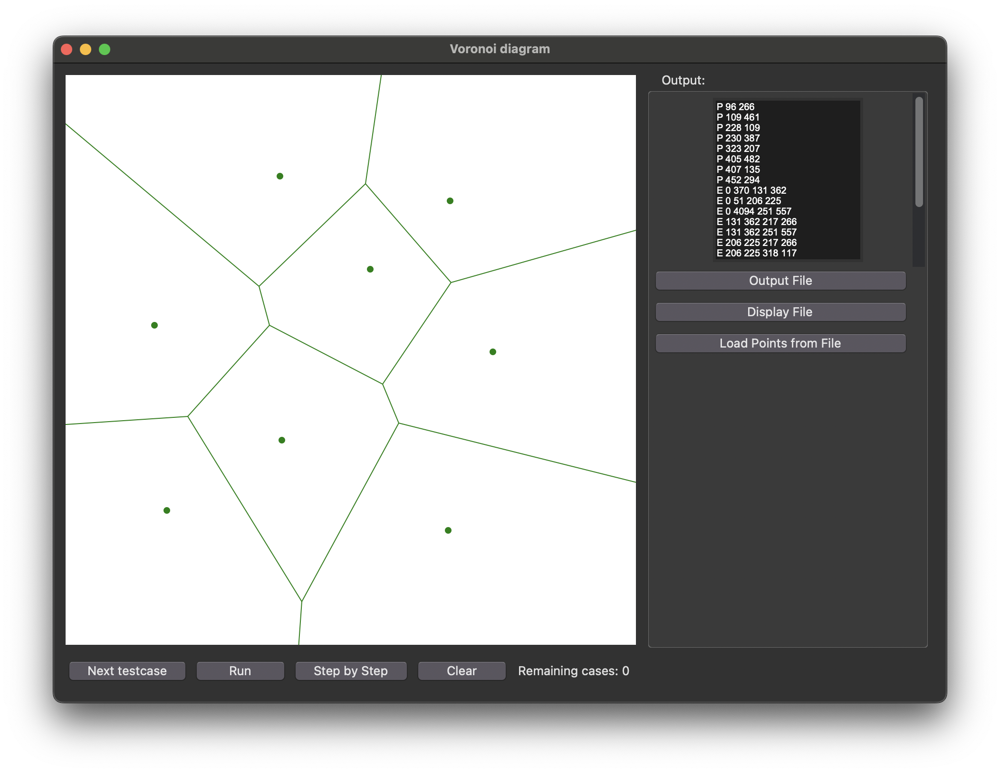
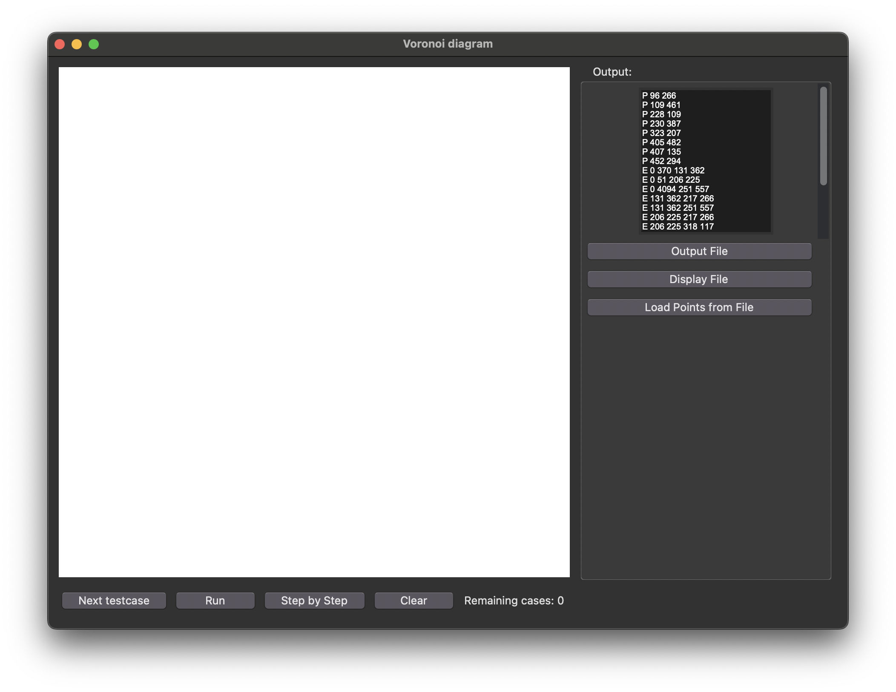
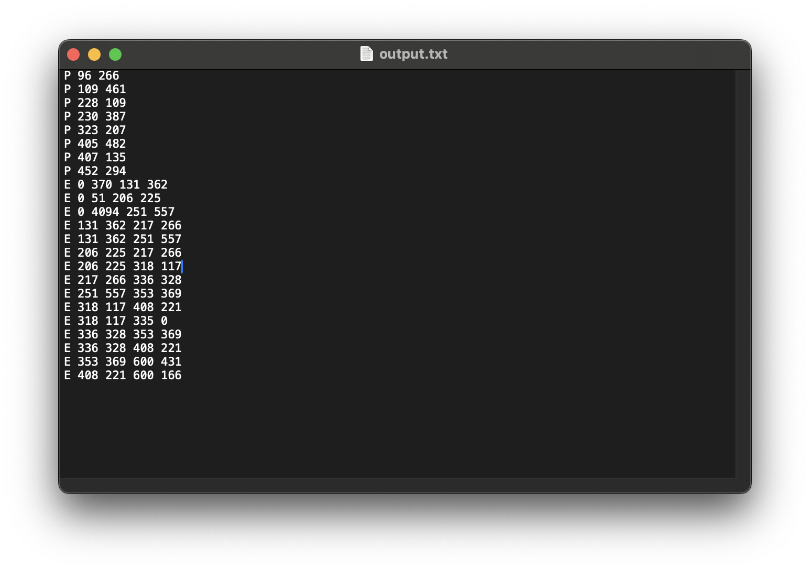

軟體規格書
輸入資料規格：
1.文字檔：
利用load points from file按鈕輸入.txt檔。
文字檔內，一筆測資的第一行為一個正整數n，代表n個點，接下來n行為 x y，代表點座標為（x,y），全部測資輸入完後輸入0表示輸入結束。
如：
3
50 50
100 100
200 200
0
2.滑鼠直接點擊畫布：
點擊完所有想輸入的點後按下Next testcase按鈕即完成輸入。
輸出資料規格：
畫完voronoi圖後，按下output file按鈕會輸出一個output.txt檔，每行代表一個點或邊，圖上的每個點會以（Ｐ 點座標）表示，每個邊會以（Ｅ 起點座標 終點座標）表示。
如：
P 50 50
P 100 100
P 200 200
E 0 150 150 0
E 0 300 300 0
軟體說明

開啟執行檔後會出現上圖的軟體，有兩種輸入測資方式。
一種是點選load points from file(7.)按鈕，另一種是直接在畫布上選點，
完成測資輸入後點選Next testcase(1.)載入測資。
有兩種執行方式，run(2.)按鈕會直接將voronoi diagram畫完，
step by step(3.)按鈕依divide and conquer步驟執行。
執行完成後，可以點選clear按鈕清空畫布(4.)，再接著在畫布上用滑鼠輸入點。
可以用output file(5.)按鈕來輸出此圖的文字檔。
display file(6.)按鈕可以畫出output file格式的圖。
範例：
Next testcase(1.):

按下next testcase載入並顯示點
Run(2.):
按Run直接執行完成，綠色圖代表完成merge
Step by step(3.):

紅藍色代表左右voroboi diagram,準備merge

粉/淺藍色代表紅/藍色圖的convex hull

橘色代表兩圖合併的convexhull

紫色代表hyper plane lines

黑色代表已刪除完無用的線

綠色代表完成merge
Clear(4.):

按Clear按鈕清除畫布
Output File(5.):

按output file按鈕輸出文字檔
程式設計
本程式使用divide and conquer完成，可以將程式碼大致分為兩部分，
第一部分是怎麼畫出divide到3點以下的圖，第二部分為將兩個畫好的voronoi diagram合併，
以下先說明資料結構，再分兩部分說明voronoi diagram怎麼求。
零、資料結構：
我用的資料結構很簡單，因為每個圖都是用點和邊所構成的，
所以我創建了一個Diagram Class，裡面包含三個list，分別為points、original_edges、canvas_edges，
計算時只會用到points和original_edges，canvas_edge是用來存最後輸出到output file的邊。
Class Diagram:
points=[point_1,point_2,...] ,
其中 point=[x,y] (以下用到point前綴的都為此結構)
original_edges=[edge_1,edge_2,...] ,
其中 edge=[point_start,point_end,point_parent1,point_parent2]
（point_parent1和point_parent2代表此邊為這兩點的中垂線）
canvas_edges=[[canvas_edge_1],[canvas_edge_2],...] ,
其中 canvas_edge=[point_start,point_end]
一、3點以下voronoi diagram（包含3點）：
分成三種情況：
1.一點直接回傳
2.共線：
(1)兩點共線：求兩點中垂線
(2)三點共線：求三點兩條中垂線
3.三點非共線：算出三點外心，由外心當起點畫出射線
二、Voronoi diagram合併:
創建merged_diagram，points和original_edges皆為左子圖和右子圖的相加。
步驟一：求左右子圖的上下切線
上下切線定義是左右子圖做出convexhull後，連接兩邊convexhull的切線，
這兩條線不能穿過兩邊的convexhull，即為上下切線。
我求上下切線的方法是直接將左右子圖的點先合併
，然後求出合併後的convexhull
，再遍歷合併後的convexhull上的所有點，
檢查遍歷時現在的點和上一個點是不是分別在兩個子圖內，
如果是就代表現在的點和上一個點的連線為上下切線其中之一
，因此遍歷完convexhull後可得兩條線，即為上下切線。
步驟二：求左右子圖合併的中間線（hyper plane線）
第一條hyper line為上切線的中垂線，我們要求第一條碰到這條hyper line的線，稱為top line為上切線的中垂線，我們要求第一條碰到這條hyper
，用順逆時鐘來判斷top line要切掉哪一邊。因為top line和hyper line一定有一個parent point相同
，用不同的兩個parent point來求下一條hyper line，
依此循環直到hyper line的parent和下切線的起點和終點相等，即為最後一條hyperline。
步驟三：刪掉無用的線
此時因為我們對與hyper line有交點的線切過，導致會留下一些無用的邊還未被刪除
，可能是左子圖的邊出現在右邊或右子圖的邊出現在左邊，且都沒有與hyper line相交
，這些邊需要被刪除。我遍歷所有邊一一對其高度的hyper line比較，若其為左/右圖的邊
，且兩端點都在對應的hyper line右/左邊，則刪除此線。
步驟四：合併左右子圖
完成刪線後，將所有hyper line加入merged_diagram中的original_edges即完成合併。
結論與心得
這次term project這次花了我非常多時間在做，過程中常常debug到很煩躁，但我還是堅持住完成了這次term project
，也因為這樣我也獲得了很大的成就感，也讓我變得更自信了一點，我覺得這次作業非常有意義。
我從過程中也學到了很多感覺是一輩子都會用到的經驗，像是怎麼獨立完成一個專案的能力、怎麼解決問題的能力、debug的能力、和耐心，有很多基本的事情是沒辦法從書上學的，
只能從經驗中獲取，我覺得經過這次作業後，我以後寫code的流程會有很大的進步，以下說明我學到什麼。
1.先決定整個程式的架構，並用pseudo code寫出來:
在真正開始動手寫之前，要先決定整個程式的架構，才不會發現方向不對導致前面做的全部白做，
完成整個架構後也會讓我比較有感覺目前的進度，比較不會做完這步不知道該做什麼。
而用pseudo code寫出來時會讓我思考這樣在實作過程中合不合理，input和output應該要是什麼，
當把需要的input和output決定好後，資料結構就可以有所依照，用好的資料結構對整個程式的幫助很大。
2.盡量把一個完整的步驟用function來寫，把所有function先列出來：
把完整的步驟用function來寫的好處是程式碼更易讀且更好debug，如果全部都寫在一起程式碼會變得很亂，
需要修改功能時很容易牽連其他步驟，而且這種程式碼基本上只有本人會想看。把所有function都列出來會讓我的整個架構有更深入的了解，
然後更好分次完成，如果不用function來做很容易隔幾天回來做時要看很久目前做到哪裡。
3.建立資料結構：
完成上述兩項後就可以有所依照的建立資料結構了。
4.照順序完成每個function細節：
這步驟應該是花最多時間的，因為必須要先有想法才能實現出來，而很多時候一開始的想法都不夠完善
，且需要有耐心慢慢debug，只能從經驗來提升寫function的能力，跟同學討論也是一個很好的方法。
以上是我完成這次project深刻體會到的事情，寫在這裡也當作一個紀錄，我覺得我學到蠻多課本上學不到的事
，會推薦學弟妹來修這門課。